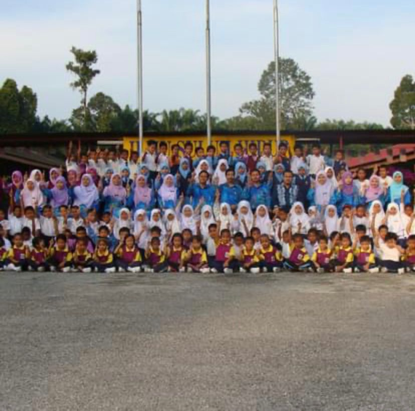

ELEMENTARY SCHOOL
I schooled at SK Kampong Poh.From the age 5 yeears old untill 12 years old.Elementary school was the first place that exposed me about friendship.Back in the days, I still remember how happy I am going to school just to meet my friends.It was good old days.
HIGHSCHOOL
SMA Daerah Batang Padang is a place where emotions and experiences that shape me into who i am. It’s a time when friendships blossom, sometimes in the most unexpected places, creating bonds that feel unbreakable. Those laughter-filled hallways, late-night study sessions, and spontaneous adventures after school become the backdrop of our youth, filled with countless memories that we cherish.
I learnt not just from textbooks, but from the kindness of a friend who lifts me up during tough times, or the lesson of resilience when faced with challenges. High school teaches me about collaboration, compassion, and the beauty of diversity as we navigate the complexities of growing up together. Each moment whether joyous or challenging which helps me grow, leaving me with invaluable lessons and a treasure trove of memories that I carry with my into adulthood.
UNIVERSITY
Leaving everything behind to pursue my studies at UiTM Kedah was a leap into the unknown, a brave step toward a new chapter of my life. Here, I embraced the thrill of new beginnings, forging friendships that have become my anchor in this vibrant community. Each day unfolds like a fresh canvas, painted with the colors of shared dreams, late-night study sessions, and laughter that echoes through the halls. In this journey of self-discovery, I’m not just gaining knowledge; I’m building a new life filled with hope, resilience, and the warmth of bonds that will last a lifetime.